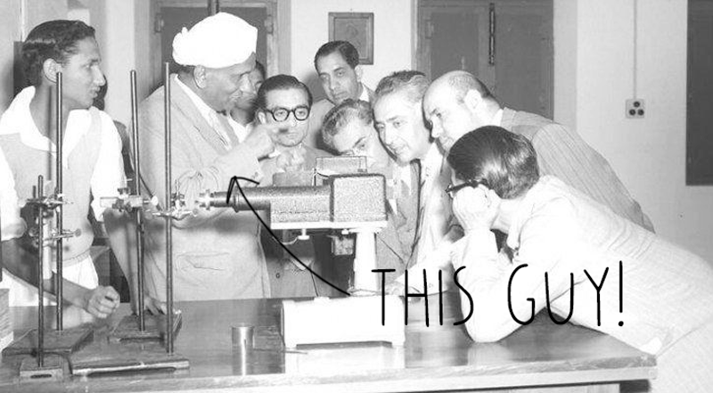

Robotic sorting
Robotic Sorting
Why Sorting?
68% of the world’s plastic can’t be sorted by automated recycling facilities. While local recycling works differently in every country, typical sorting facilities may identify and separate PET and HDPE plastics, but due to the high cost of sorting, the rest of the plastics will likely be left mixed. These mixed plastics may be sent on to other waste facilities to be burned for energy, they might end up in a landfill, some are shipped overseas, and in the worst cases they are piled up and burned in the open air.
Local recycling works differently in every country, but there are a variety of options to recognize plastic. This can involve high end industrial machines that cost facilities millions, or paying people to sort through waste by hand. Building processes that fit in between will take time and energy, and that’s what we’re working towards.
Now, let's welcome One Arm!

For a robotic system like this one to pick and sort plastic you need three things:
- An arm, to pick the plastic up
- Sensors (or eyes), to know where the plastic is
- A brain, that’s programmed to make decisions based on chosen parameters
Sounds simple, right? Each component has their own set of unique challenges, including getting them all to work together as a unit. Many robotic systems that are provided by companies come with their own operating systems, but these are closed systems (and we like open-source!) so, we went with a system called Robotic Operating System (or ROS). ROS creates this whole framework that allows each part - arms, sensors, brains - to send messages to each other to function properly. The ROS framework is entirely modular (üéâ) so you can swap out different components or algorithms.

The Eyes
The robot needs a sensor so it can understand what’s going on in front of it. In the case of the Precious Plastic One Arm Robot, we use a 3D camera, it takes infrared depth data, and combines it with a regular 2D image and that creates a 3D world. We’ve been using a Kinect for our tested. Having 3D data makes it easier to understand the whole shape of an object and lets you better plan how to pick it up.
Depending on what system you’re using to move the plastic, you might not need a fancy 3D camera for the sensor to recognize objects. There are systems that use regular 2D cameras combined with machine learning technology to target and recognize objects to pick up.
The Brain
Ok, so there’s a lot of data coming in from the 3D camera but the arm doesn’t know what to do with it yet. When we look at the visualization of the points, humans can understand that each group of pixels may be a different object, but we need to walk our computer brain through several steps before it can recognize the same thing.
Here you can see on the left the full resolution of points coming from the camera. With this many data points it will be difficult for the brain to quickly process everything, so on the right you see how we pull the resolution down to speed up the processing.

On the top view, we can remove the belt and so it’s easier to focus on specific objects (left) and then with the clusters that are left, the brain uses an algorithm that clumps points in space together to recognize them as unique objects (right).

With our unique objects identified as clusters of points, our brain finds the object’s center and highest point to create a “pick point” for the gripper of our arm to travel to. With this point in space known, a ROS function is able to create a safe path that the robot can follow to reach that point. Once it travels to that point and picks up an object, it then moves it to a determined goal location.
The Arm
We bought a second-hand industrial robot, which was not exactly cheap (but every year they are getting cheaper and easier to find). Ours has a 1.5 meter reach and a 10 kg payload capacity. It operates on 6 axis to achieve a huge variety of poses. It’s not quite ready to win any awards for speed, but we chose this because they’re easier to develop for. Other robot geometries (like a delta or SCARA) are better suited to achieve high speeds that are ideal for pick and place operations.
To actually grab the plastic waste, we use a vacuum-gripper. It’s like a mini vacuum cleaner pipe that can suck in and hold objects. We’re using a vacuum generator that uses compressed air to generate the vacuum. Our vacuum generator also allows us to to speed up the dropping process by activating a quick burst of air to blow out the gripped object.

Another key part of this stage is how the plastic is delivered to the system. Implementing a conveyor belt would make this an entirely autonomous loop of plastic recycling üéâüéâüéâ
So what’s next? One Arm is picking up and dropping off plastic, it knows where to go - a great result! From here we’ll be improving the suck and blow gripper and thinking about installing a conveyer belt. If you want to learn more about this research project, visit the forums and discuss plastic sorting. We’ve also posted our segmenting code on Github to see if anyone wants to improve on it. Check it out here!
Ok, but how does it know what is HDPE and what is PS?
That's a great question! Another very important part to making this work is to actually identify what type of plastic it is. A robot is smart, but unfortunately it's not smart enough on it's own (probably a good thing) to identify different materials. This is where our research into plastic identification techniques comes into play.
As we have learned already, we use the numbers 1-7 to label different plastic types, but there is still a lot of plastic that is unmarked, degraded or shredded, so we can’t always rely on seeing this number.
Machine Learning
Ok, so machines aren't smart enough on their own, but they can be trained to recognize different objects using techniques known as machine learning. Basically this means you create a big dataset of objects that have been labeled with a type of plastic, and then feed that into an algorithm that starts to recognize patterns in the raw data and can then apply these patterns to new unknown datapoints.
We did implement a basic version of this in our research with One Arm, and it worked perfectly on our small unknown data set! We showed the 3D camera known objects and told it to record their shape, size, and color in a variety of orientations. We also told it what kind of plastic it was beforehand. Then we fed all that raw info into a training algorithm the produced a support vector machine (SVM) model. This SVM model was able to recognize all 15 known objects we trained it on 100% of the time!
That's great, but unfortunately there are more than 15 different plastic objects in the world. It's very possible to use larger data sets and improved models to sort all sorts of plastic in the future, and there are plastic sorting facilities out there using this method. There are still major issues recognizing the type of plastic in an object that hasn't been seen before.
Spectroscopy
An alternative approach is to use spectroscopy, observing the interaction between matter and electromagnetic radiation. True spectroscopy rather complex and expensive, so we can use it’s simpler sibling: optical spectroscopy.

Riiiiiight. So how does it work? Well, it’s pretty simple: you throw light at objects, and depending on the response, it will categorise the object - every plastic type has a kind of fingerprint. There are a few options we have to do this:
The first is near-infrared spectroscopy, which uses wavelengths close to the infrared spectra. It’s a method widely used in industry, and there is some research going on in the Precious Plastic community about this. The downside of this method is that is has difficulty with thick plastics, dark colored plastics, and microplastics. There are quite a few of those
The other option we have is raman spectroscopy, which is more complex but has fewer downsides: it’s more precise at identifying plastic, we get more information about colors, you can see contamination from other materials, and it can give information on degradation of the plastic. Wow, that’s amazing! But wait, there’s even more: with this method we can even use it to recognize microplastic in water
The possibilities are really exciting with raman spectroscopy, and so that’s why we decided to break our heads with it. And of course, all of the research is available open source online for free. So let’s get into it!
The relationship between material and light has been studied for a long time. In 1930, Indian physicist C. V. Raman was awarded the Nobel Prize for his contribution to this field. And those in the field have learnt a lot since then. For example, we’ve learnt that when you throw light at an object, some molecules gain energy and some lose energy, and this is a great way to identify plastic.
In simple terms it means that if we throw, say, green light, at some material we will get mostly green light bounced back, but we will also get other colors, maybe purple or red, and from that difference it is possible to identify what things are made of and therefore what kind of plastic it is.

Before we go further, some respects to be paid. At Precious Plastic we’re pretty resourceful, we like making and fixing things, developing machines. But this experimental research into using raman spectroscopy wouldn’t be possible without the work of C.V. Raman (obviously) and to all the scientists and researchers out there who publish their findings online open source. We couldn’t do it without you (please keep going!)
So with all of this information out there, we‚Äôve been working on a prototype for a sensor that can be used all around the world to tackle this problem together üí™
First things first. Optical equipment is very sensitive to dust so to work with the components a very clean environment is needed. Need help on building a clean space? Head to the forums to learn how to build one with a box, some 3D printed parts and bits from a vacuum cleaner.
So let’s dive into the scanner! The system is composed of two main stages, the excitation stage and the spectrograph stage.

The excitation stage is designed to shine a light source at the material we are trying to identify and direct its response into the spectrograph. In order to measure the energy shift in molecules we need to provide a known wavelength light source, and this is the first component of the spectrograph. Our spectrograph is using a green laser for this.
We use a beam splitter to direct the laser light into a microscope lens where we can concentrate photons onto a tiny spot so they interact with our unknown plastic. The same microscope lens is used to capture the response from the material. Since the molecules inside a material that presents raman effect are low (compared to the ones that remain in the same energy level), we need to filter out the original signal before sending it on to the spectrograph.
For the spectrograph we are using a Czerny Turner configuration, this is where the light will be spread in all of its components for it to be collected and digitized by the sensor, so we can compare it and
The light enters the entrance slit that restricts light access so we only get the material response and nothing else. A first mirror is used to collimate the light to a diffraction grating (similar to a prism) so we can record every wavelength of the response. Then a second mirror is used to focus the light spectra into a CCD array where we can capture the signal and transfer it to a computer for further analysis. A CCD array sounds fancy, but it’s the same technology used in your cell phone camera. For the molecular structure signals we’re looking for it need to be extra precise. That’s why the last component of the spectrometer is a thermoelectric cooler that controls the temperature of the CCD array.
With this set up it is possible to exide molecules and measure their response, and then transfer the information to a computer for further analysis. Thanks to our team member Alejandro for his work so far. The Precious Plastic scanner is still very much a work in progress, but what’s exciting are the capabilities and possibilities of the system.
Want to learn more or share your knowledge? Head to the #robotics and #plastic scanner channels on Discord. Here we talk efficiency, sorting, scanning and of course, robots ü§ñ